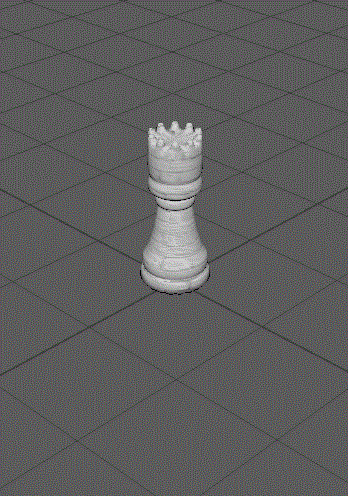

Final
Final!!
This is the final assignment for the class of EAE6320! Using all the things learnt from the class over the last semester, I created the game of chess (almost!). This version is a two player game, with shared controls on the keyboard. Granted that this is not a full game, I still have a sense of achivement by looking at the effort required to build the game. Here is a screenshot of an aggressive queen play!
Controls
- Use the (Arrow keys) to move the green selection box.
- Press SPACE to interact with the selection box and perform an action.
- Press ESC to exit the game.
Description
You control the green selection box with the help of the arrow keys. When the box is over a piece you ownand you press space, the piece gets selected. Now you can see the squares with possible moves for the piece highlighted in the same green color. To move the selected piece, move the box to the desired valid location, and press psace again. Now you see that the camera changes. It signals the end of your turn and the start of the other player's turn.
Some Limitations
- You can not capture the enemy's pieces (I know, this is the main goal of chess!)
- As a result of (1.) you can not obviously win or lose!
- No special moves such as castling or promoting a pawn can be performed.
- No scoreboard(or any form of UI)
- The black background needs to change!
Tech Stuff
The lack of gameplay features are compensated by the code features which were added. First of all, all the models seen in the scene, are modelled in Maya by me. This gave me an excellent opportunity to interact with the art tools which the artists use. As I went on with the modelling, I found out that Extrude tool was my best friend. All the models are results of multiple iterations of extruding a face and rescaling it into shape. In this way, a simple cylinder could turn into a rook! To make them look smooth, I applied the smooth tool on each of them. This increases the poly count (number of faces and vertices) on them and reduces any sharp edges. You can see the rook in Maya.

In order to show off the models in game, I needed to add lighting. We had an extra class on the basics of lighting, and with that, I added Ambient, Diffused and Specular lighting. I also had to change the UV wrapping of the models, especially the chess board. The texture on the chessboard is a tiled texture with image repeating on each of the faces.
To simplify the positioning of the objects into the scene, I created a SceneBuilder tool. This tool, reads data from a lua file, and then arranges the listed objects as per the data in the file. This file contains the path to mesh file, the path to material file, the position and the orientation of the object. This helped a lot with the setting up of the scene. However, this has some disadvantages.
EAE6320
This class was all about the writing good code and building a good pipeline for asset creation and loading. This class gave me the opportunities to try various tools, such as Git and Maya, which I was relatively new at till now. I started appriciating how John-Paul taught us the classes and had us do the writeups for the assignments. I learnt that these assignments, and learning new things in general is not only about coding. Writing about the concept and explaining the code helps you to understand more about that concept.
I also had to learn good code organization in code itself and in the explorer. Having various almost independent systems in different projects, and creating multiple platform dependent implementations of any methods were some of the things I learnt about softare architecture.
The main thing to learn from the class was the improtance of Data driven architecture and the importance of pre building the non-code data. We learnt to use binary files more effectively and the way they reduced the compile time significantly. I believe, if one learns how to minimize the compile time effectively, he has mastered the art of software engineering.
Stretch Goals
There will be some updates to the game as I will continue to work on it during the holidays. Here are some stretch goals, which I will be crossing off as I finish them in the future. Here are the stretch goals in no particular order:
- Capturing of pieces.
- Win / Lose State.
- Advanced Tactics.
- UI.
- Timer.
- Logs of moves made.
- Better color pallette.
- Dynamic loading and destroying of objects.
- Smooth lerp of the camera.
- Dynamic Lighting.
- Different cameras.
Final Note
Watch out for updates to this page over here and make sure to report any bugs to snkulkarni92@gmail.com
Time Estimate
Modelling: 4 hours
Coding: 15 hours
Debugging: 3 hours
Writeup: 2 hours
Download Links
Download Direct3D
Download OpenGL